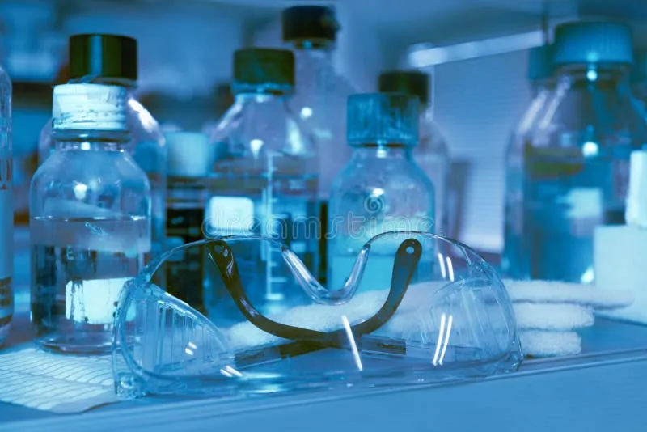
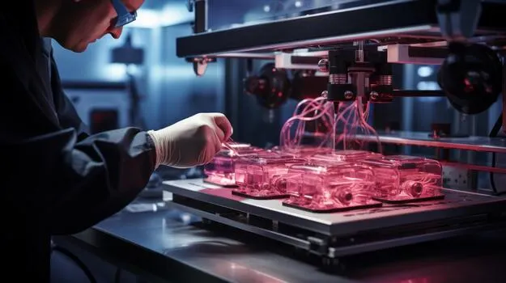
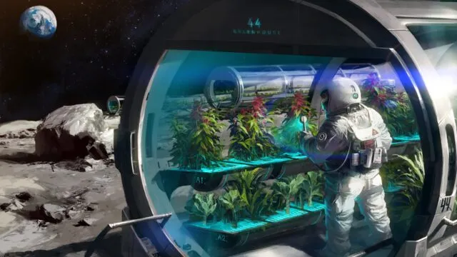

From precision medicine to food security, and from clean energy to marine innovation — biotechnology is reshaping the future. Explore its core applications and the ethical and scientific challenges that accompany rapid advancement.
Biotechnology is the science of leveraging living systems, cells, enzymes, and genetic material to develop products and technologies that benefit people and the environment. It is the intersection of molecular biology, genetic engineering, and bioinformatics, evolving from traditional fermentation practices to precision genome-editing tools like CRISPR.
In an era of intersecting health, food, and environmental crises, biotechnology is emerging as a pivotal scientific driver for addressing global challenges. Its impact extends beyond research laboratories to shape economies, industry, and international health policy.

Gene therapies, accelerated vaccine development, and precision medicine tailored to individual genetic profiles.
BiotechGenetically optimized crops with greater drought and pest resistance, and technologies that improve agricultural productivity for a growing population.
BiotechBioremediation, sustainable biofuels, and engineered microbes designed to reduce carbon emissions and protect ecosystems.
BiotechIndustrial enzymes, biodegradable bioplastics, and advanced fermentation processes that reduce reliance on fossil resources.
ITis the use of biotechnological tools and techniques to improve food production, quality, and availability—ensuring a stable supply of safe and nutritious food for a growing population.
BiotechForensic biotechnology is the application of biotechnological techniques—especially DNA analysis—to identify individuals and analyze biological evidence for use in criminal investigations and legal cases.
IT × BiotechUse of stem cells to repair or replace damaged tissues and organs.
Printing tissues and potentially whole organs for transplantation.

Developing plants that can survive drought, heat, and poor soil conditions.
Growing food and tissues in space for long-term space missions.

Using genetic material to treat or cure diseases; already applied in some cases, but still limited in safety, cost, and accessibility.
Using microorganisms to clean polluted environments such as oil spills, toxic waste, and contaminated water.
Biotechnology carries exceptional promise for improving human health and protecting our planet, but these opportunities are inseparable from significant scientific and ethical responsibility. True progress is measured not only by the pace of innovation, but by our ability to guide it wisely, preserving the balance between scientific ambition and human values. At BE Club, we believe the best way to understand this future is to participate in shaping it.